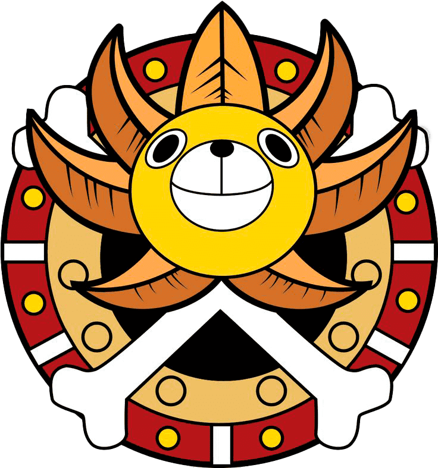
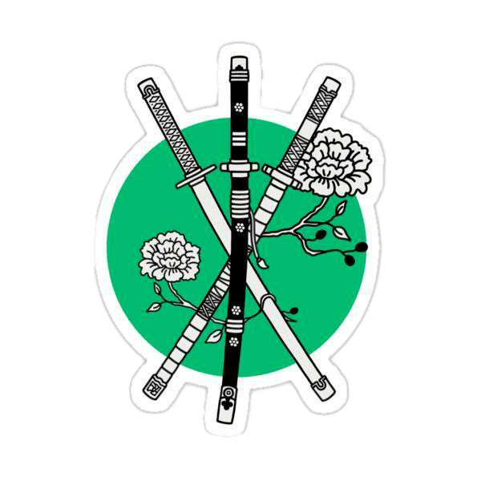
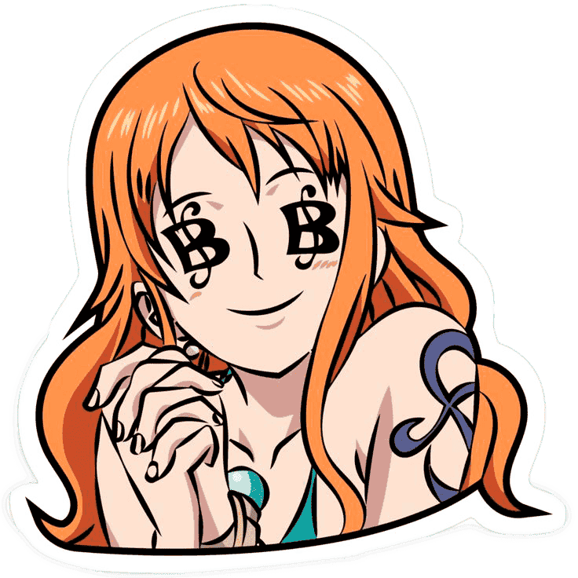
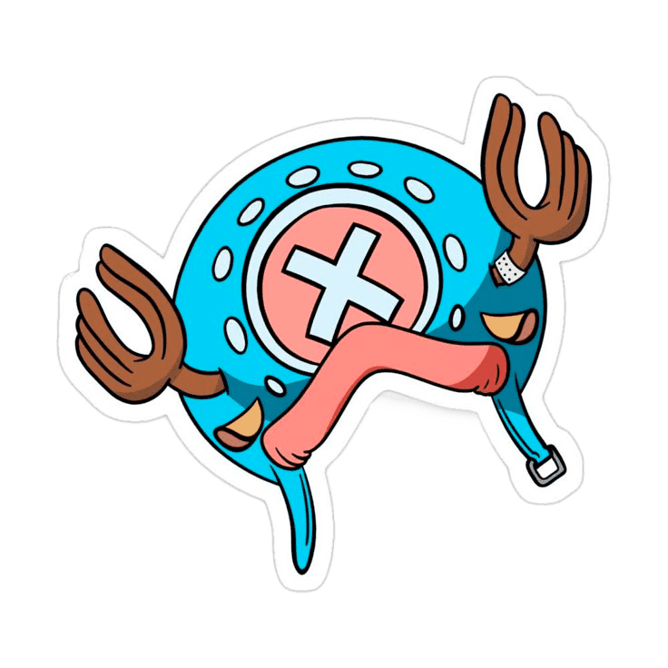
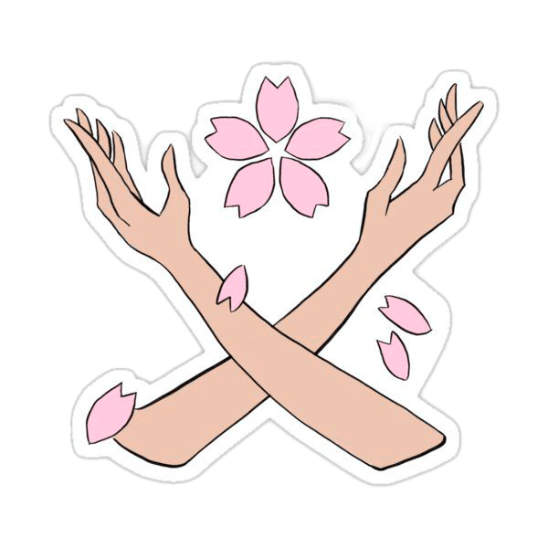
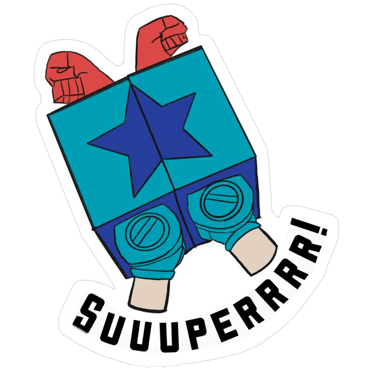
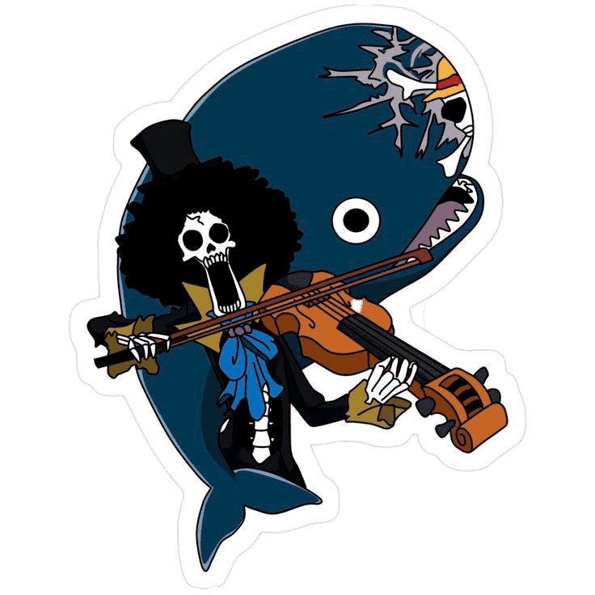

Personajes: Los piratas Sombrero de Paja
Monkey D. Luffy - El Capitán
Monkey D. Luffy, más conocido como Luffy Sombrero de Paja, es el protagonista principal de la serie de manga y anime One Piece.
Es el capitán y fundador de los Piratas de Sombrero de Paja así como uno de los Cuatro Emperadores que gobiernan los mares del Nuevo Mundo.
Comió una fruta del diablo llamada fruta Gomu Gomu, que le convirtió en un hombre de goma.
Además de esto, posee varias habilidades que le hacen ser un pirata más que especial;
un gran ejemplo de ello es la capacidad de usar el
Roronoa Zoro - El Espadachín
Roronoa Zoro, conocido como El Cazador de Piratas, es el primer pirata que se unió a Monkey D. Luffy, y el principal combatiente de los Piratas de Sombrero de Paja, uno de sus dos espadachines y uno de los oficiales principales de la Gran Flota de Sombrero de Paja, así como un antiguo cazarrecompensas. Es originario del East Blue y desde joven entrenó intensamente en el arte de la espada con el sueño de convertirse en el mejor espadachín del mundo. Zoro utiliza un estilo de combate único llamado Santoryu (estilo de tres espadas), en el que empuña una espada en cada mano y una tercera con la boca.
Nami - La Navegante
Nami, apodada Gata Ladrona, es una pirata y la navegante de los Piratas del Sombrero de Paja, así como una de los oficiales principales de la Gran Flota de Sombrero de Paja. Es el tercer miembro de la tripulación y la segunda en unirse, haciéndolo oficialmente durante el arco de Arlong Park. Ella era anteriormente un miembro de los Piratas de Arlong e inicialmente se unió a los de Sombrero de Paja con el fin de robarles, pero se unió oficialmente tras rebelarse contra Arlong y su posterior derrota a manos de Luffy.
Usopp - El francotirador
Usopp es el francotirador de los Piratas de Sombrero de Paja y uno de los oficiales principales de la Gran Flota de Sombrero de Paja. Es el cuarto miembro de la tripulación y el tercero en unirse oficialmente. Es proveniente de la villa Syrup en el East Blue. Ahí ejerció como capitán de los Piratas de Usopp, pero tras los eventos del arco de Villa Syrup, se unió a los Sombrero de Paja. Su sueño es convertirse en un valiente guerrero de los mares como su padre.
Vinsmoke Sanji - El Cocinero
Sanji, conocido como Pierna Negra y nacido como Vinsmoke Sanji, es el cocinero de los Piratas de Sombrero de Paja, así como uno de los oficiales principales de la Gran Flota de Sombrero de Paja. Es el quinto miembro de la tripulación, y el cuarto en unirse. Él nació en el North Blue, siendo el primer tripulante en no ser originario del East Blue Nacido como el cuarto hijo de la familia Vinsmoke, Sanji se exilió de su país y renegó de su familia, yéndose al East Blue y pasando a trabajar como cocinero en el Baratie, hasta que decidió unirse a la banda. Es considerado parte del Trío Monstruoso junto a Luffy y Zoro; y, como tal, es uno de los combatientes más fuertes de la tripulación. Su sueño es encontrar el mar legendario conocido como All Blue.
Tony Tony Chopper - El Doctor
Tony Tony Chopper, es el médico de los Piratas de Sombrero de Paja, así como uno de los oficiales principales de la Gran Flota de Sombrero de Paja. Es un reno que comió la fruta Hito Hito de la isla de Drum. Él es el sexto miembro de la tripulación y el quinto en unirse a ella. Su sueño es poder curar cualquier enfermedad. Gracias a la Fruta del Diablo Hito Hito no Mi, Chopper obtuvo inteligencia humana, la capacidad de hablar y transformarse en diversas formas híbridas entre reno y humano. A pesar de ser considerado un "monstruo" en su isla natal, fue acogido y entrenado por el Dr. Hiriluk y más tarde por la Dra. Kureha, quienes le enseñaron medicina y lo inspiraron a convertirse en un gran doctor.
Nico Robin - La Arqueóloga
Nico Robin, también conocida por sus epítetos: Niña Demonio y La Luz de la Revolución es la arqueóloga de los Piratas de Sombrero de Paja, así como una de los oficiales principales de la Gran Flota de Sombrero de Paja. Es el séptimo miembro de la tripulación y el sexto en unirse, haciéndolo al final del arco de Arabasta. Es introducida como una de los antagonistas secundarios más destacados de la saga de Arabasta. Sin embargo, luego de ser salvada por Monkey D. Luffy, se une a la tripulación. Su sueño es conocer la verdadera historia investigando en los poneglyphs.
Franky - El carpintero
Franky, apodado el Hombre de Hierro, es el carpintero naval de los Piratas de Sombrero de Paja y uno de los oficiales principales de la Gran Flota de Sombrero de Paja. Es el octavo miembro de la tripulación y el séptimo en unirse, haciéndolo al final del arco del regreso a Water 7. Un incidente que dañó su cuerpo le requirió convertirse en un cyborg para curarse. El sueño de Franky es crear un barco y circunnavegar el mundo con él, y construyó el Thousand Sunny y se unió a los Piratas de Sombrero de Paja para cumplir su sueño.
Brook - El Músico
Conocido como Soul King, es el músico de los Piratas de Sombrero de Paja, uno de sus dos espadachines y uno de los oficiales principales de la Gran Flota de Sombrero de Paja. Es el noveno miembro de la tripulación y el octavo en unirse, haciéndolo al final del arco de Thriller Bark. Brook consumió la fruta Yomi Yomi, que le permitió volver a la vida después de la muerte una vez. Brook aprendió con el tiempo a aprovechar más profundamente los poderes de su fruta del Diablo, dándole un control significativo sobre su propia alma y las almas de los demás. Su sueño es reunirse con su viejo amigo Laboon en la Reverse Mountain.
Jinbe - El Timonel
Es el timonel de los Piratas de Sombrero de Paja y uno de los oficiales principales de la Gran Flota de Sombrero de Paja, siendo el décimo miembro de la banda y el noveno en unirse. Es un gyojin tiburón ballena, que sirvió como antiguo capitán de los Piratas del Sol y como miembro de los Siete Señoresde la Guerra del Mar. Conocido como “El Caballero del Mar”, Jinbe es un poderoso maestro del karate gyojin, un arte marcial que le permite manipular el agua como si fuera una extensión de su cuerpo, incluso fuera del mar. Gracias a esta habilidad y a su fuerza física sobrehumana, es un combatiente temido tanto en tierra como bajo el agua.